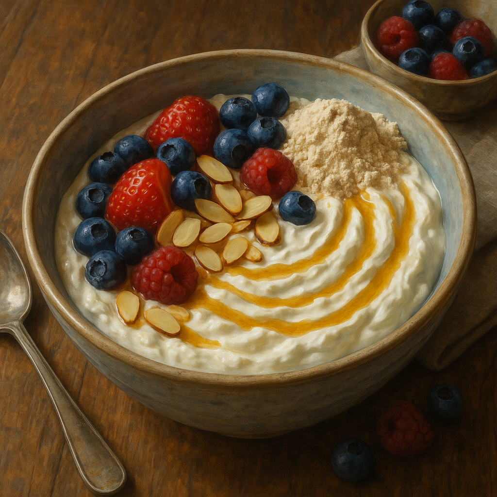
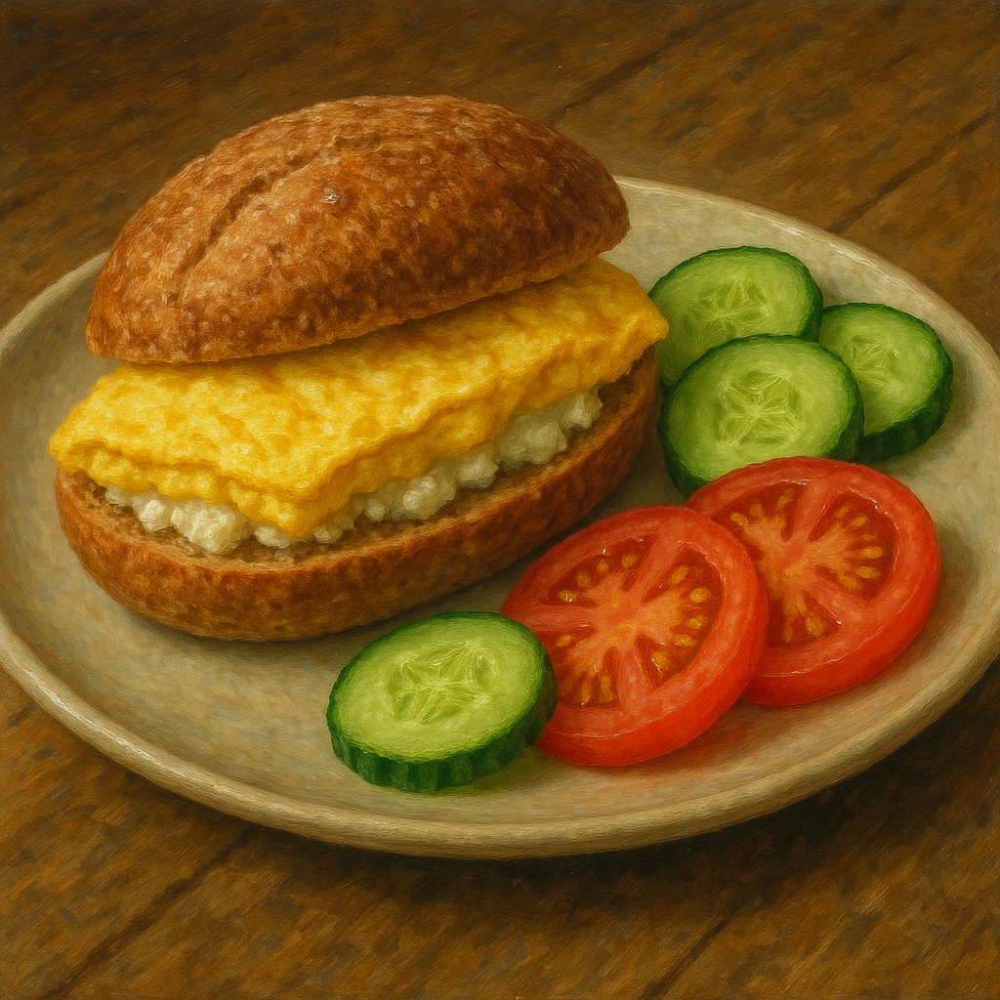
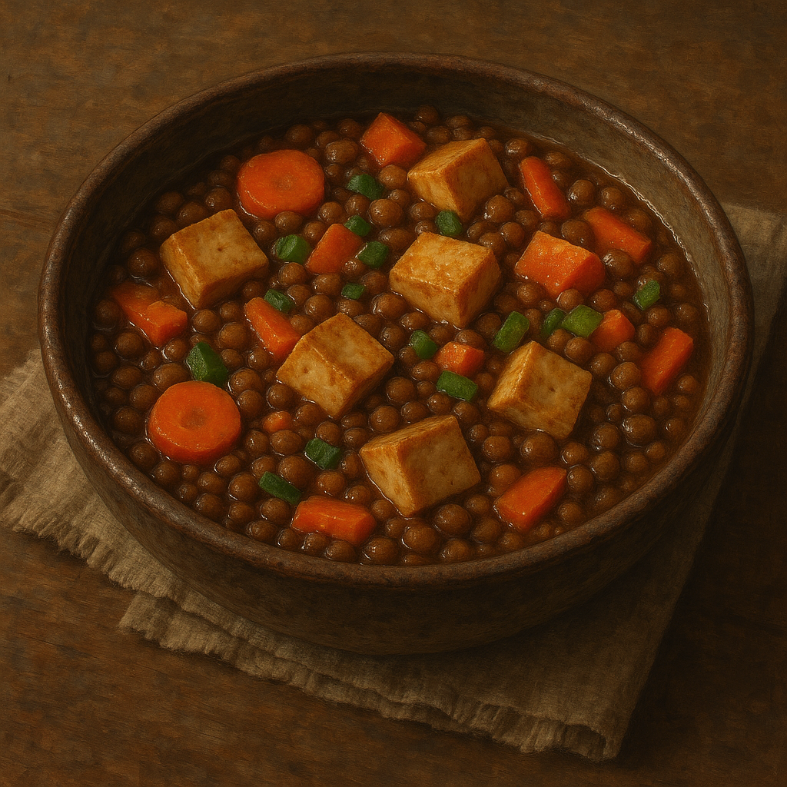
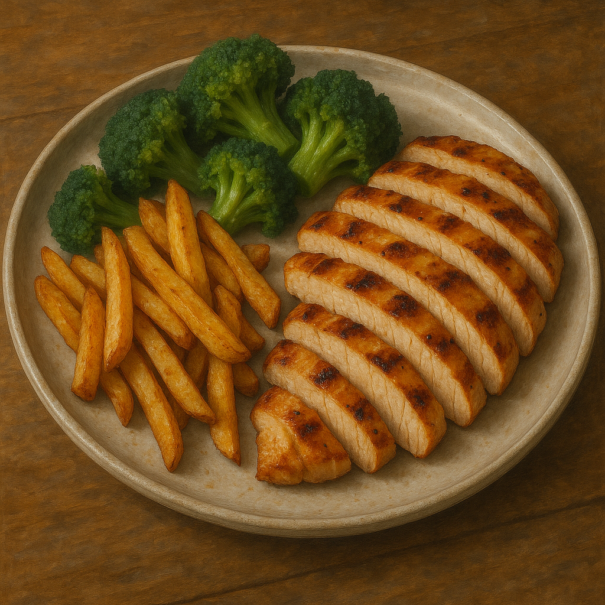
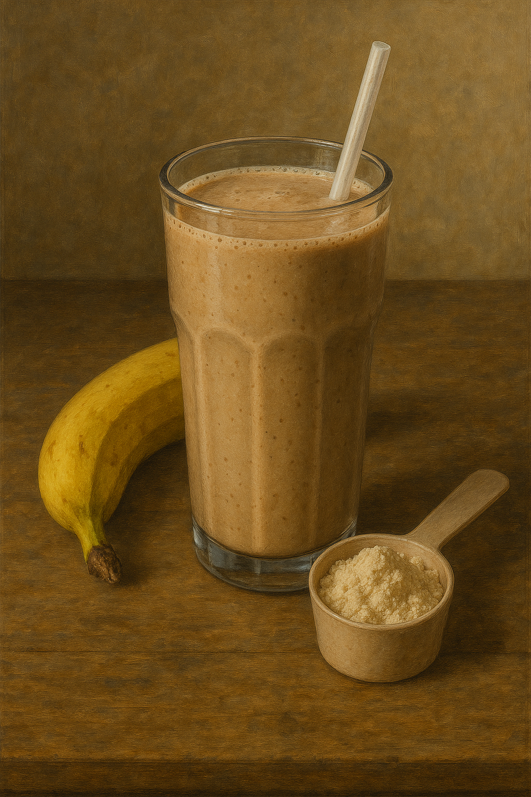
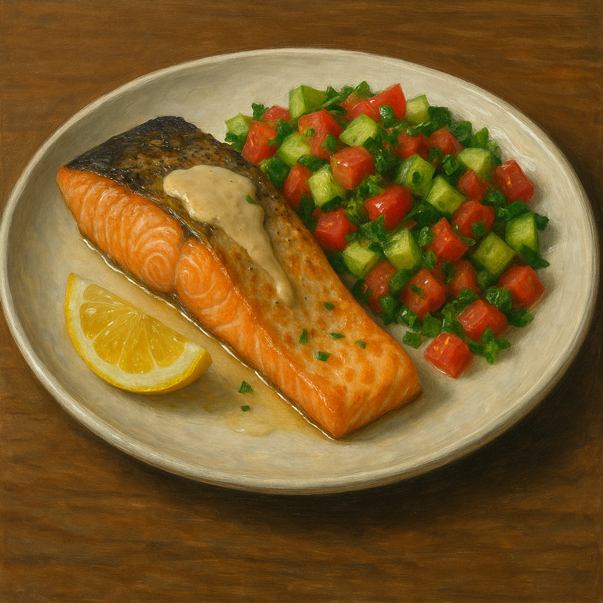

Meal 1 – Greek‑Yogurt Power Bowl

This is a refreshing, easy-to-make breakfast packed with protein and flavor.
Ingredients
- 🥛 Greek yogurt 5% – 350g (32g protein)
- 🧃 Whey-isolate powder – 20g (18g protein)
- 🍓 Mixed berries – 50g (no protein)
- 🌰 Sliced almonds – 10g (2g protein)
- 🍯 Honey – drizzle (no protein)
- Stir whey into yogurt until smooth.
- Top with berries, almonds, and a drizzle of honey.
Meal 2 – Cottage‑Cheese & Egg Whole‑Wheat Roll

A hearty and satisfying roll combining creamy cottage cheese and protein-rich eggs.
Ingredients
- 🥛 Cottage cheese 5% – 250g (28g protein)
- 🥚 Eggs – 3 large (18g protein)
- 🥙 Whole-wheat roll (לחם מלא) – 60g (6g protein)
- 🥒 Cucumber & 🍅 tomato – as side (no protein)
- Scramble or boil eggs.
- Lightly toast the whole-wheat roll.
- Layer cottage cheese and eggs inside the roll.
- Serve with cucumber & tomato slices.
Meal 3 – One‑Pot Lentil & Tofu Stew

A warm, comforting stew combining plant-based proteins and hearty vegetables.
Ingredients
- Cooked brown lentils – 250g (18g protein)
- Firm tofu, cubed – 200g (26g protein)
- 🥕 Carrot, diced – 1 medium (no protein)
- 🍅 Tomato paste – 1 Tbsp (no protein)
- 🧄 Cumin, 🧂 salt, pepper – to taste (no protein)
- In a small pot, simmer lentils, carrot, tomato paste and 1 cup water for 10 min.
- Stir in tofu cubes; heat 2 min.
- Season and serve.
Meal 4 – Grilled Chicken, Broccoli & Roasted Sweet‑Potato with Tehina

A protein-packed plate featuring tender grilled chicken paired with nutritious sides.
Ingredients
- 🍗 Skinless chicken breast – 180g (raw) (50g protein)
- 🍠 Sweet-potato cubes – 200g (no protein)
- 🥦 Frozen broccoli – 150g (5g protein)
- 🌰 Raw tahini – 2 Tbsp (5g protein)
- 🍋 Lemon + 🧂 pinch salt – to taste (no protein)
- Roast sweet-potato cubes at 220 °C for 25 min.
- Season chicken; grill or pan-sear 6-7 min per side.
- Microwave broccoli 3 min.
- Whisk tahini with 2–3 Tbsp water, lemon juice & salt; drizzle over the plate.
Meal 5 – PB‑Banana Protein Smoothie

A creamy and energizing smoothie perfect for a quick protein boost.
Ingredients
- 🧃 Whey-isolate powder – 40g (32g protein)
- 🥛 1% milk or soy milk – 300ml (10g protein)
- 🧃 Powdered peanut butter (PB2) – 30g (6g protein)
- Banana – 1 medium (no protein)
- 🧊 Ice cubes – handful (no protein)
- Blend all ingredients until smooth.
- Enjoy immediately.
Meal 6 – Oven‑Baked Salmon with Israeli Salad & Tahini

A flavorful baked salmon dish served with fresh salad and creamy tahini sauce.
Ingredients
- 🐟 Salmon fillet, skin-on – 220g (46g protein)
- 🌰 Raw tahini – 1 Tbsp (2g protein)
- 🍅 Tomato, diced – 100g (no protein)
- 🥒 Cucumber, diced – 100g (no protein)
- 🥬 Parsley, chopped – 1 Tbsp (no protein)
- 🍋 Lemon wedge – 1 (no protein)
- 🧂 Salt, pepper, olive oil – to taste (no protein)
- Lightly oil, salt & pepper the salmon; bake at 200 °C for 12–15 min until just flaky.
- Toss tomato, cucumber & parsley with a drizzle of olive oil and pinch of salt to make a
quick
salad.
- Plate salmon, spoon tahini (thinned with a splash of lemon water) on top, add salad and
lemon
wedge
alongside.